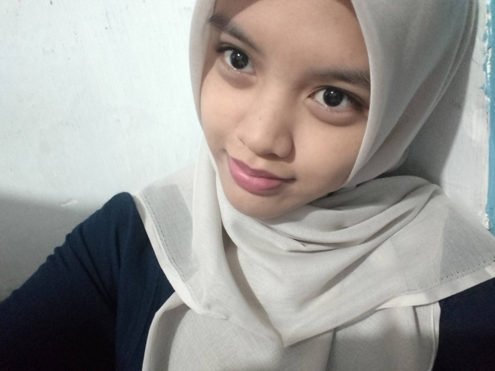

Email: naiilasyifaa14@gmail.com
HP: 082230093183
Instagram: @nailaa_syifa.a
• Perawatan PC
• Dasar Jaringan
• Pengenalan Server
• Pengelolaan Website Dasar
Saya merupakan siswi kelas 10 jurusan Teknik Komputer dan Jaringan (TKJ) yang memiliki ketertarikan dalam bidang teknologi. Saat ini saya terus mengembangkan potensi dan menambah ilmu terkait dunia IT.
SMK Negeri 4 Kota Malang
Jurusan Teknik Komputer dan Jaringan